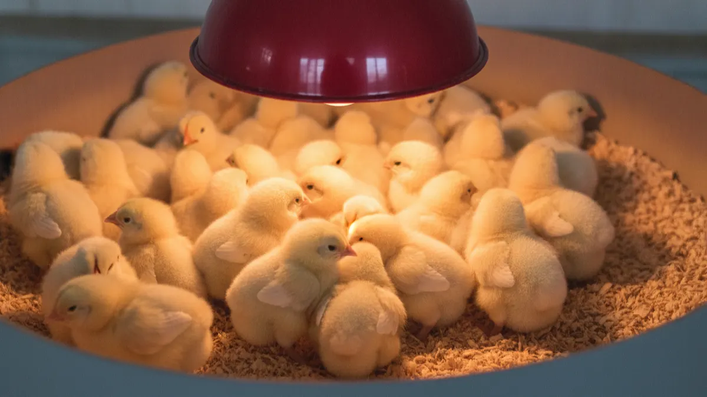

Civciv büyütme rehberi: ilk 6 hafta ana makinesi (brooder)
Yeni çıkan civciv kendi ısısını tutamaz; ilk 6 hafta ölüm kalım meselesi. Haftalık sıcaklık takvimi, civcive bakarak ısı okuma ve en sık patlayan sorunların çözümü.

Civcivi kutudan alıp kümese atmak isteyen çok gördüm. İki gün sonra telefon geliyor: "Hocam sabah baktım yarısı ölmüş." Sebep tek kelime; soğuk. Yeni çıkmış bir civciv kendi vücut ısısını tutamaz, tıpkı prematüre bir bebek gibi. İlk 6 hafta onun için ölüm kalım meselesi. Bu süreyi doğru yönetirsen sürünün %95'ini ayakta tutarsın; yanlış yönetirsen 100 civcivin 30'unu toprağa verirsin ve nedenini de çözemezsin.
Bu yazıda ana makinesini (brooder) nasıl kuracağını, hangi hafta kaç dereceye ayarlayacağını, civcivlere bakarak sıcaklığı nasıl okuyacağını ve en sık patlayan sorunları tek tek konuşacağız. Termometreye değil, civcivin diline güvenmeyi öğreteceğim sana.
İlk 6 hafta neden bu kadar kritik?
Kuluçkadan yeni çıkan bir civcivin tüyü yok, sadece hav var. Vücudu ürettiği ısıyı tutamaz. İlk günlerde ortam ısısı düşerse önce hareketi yavaşlar, sonra yem-su almayı bırakır, ardından kümelenip birbirini ezer. En alttakiler boğulur. Bu yüzden ilk haftalarda ölümlerin çoğu hastalıktan değil, ısı ve stres yönetimi hatasından olur.
Civciv 3-4 haftalık olunca tüyleri çıkmaya başlar, kendi ısısını üretebilir hale gelir. 6. haftanın sonunda artık dış sıcaklığa dayanabilecek bir piliç olur. İşte bu 6 haftalık geçiş, bütün işin kalbi. Sabrını burada göstereceksin.
Ana makinesi (brooder) nedir, nasıl kurulur?
Brooder dediğimiz şey aslında karmaşık bir alet değil; civcive analık yapan, sıcak, kuru, akımsız ve korunaklı bir alan. Küçük ölçekte bir mukavva kutu, tahta bir kasa, hatta eski bir su deposunun yarısı iş görür. 100-200 civciv için 1,5-2 m² kapalı, ısıtmalı bir alan yeterli başlangıçtır.
Isı kaynağı olarak üç seçenek var. Kızıl ötesi (infrared) ampul en yaygın olanı; 250 W'lık bir ampul yaklaşık 50-70 civcivi ısıtır. İkincisi elektrikli rezistanslı ana makineleri, üçüncüsü ise gazlı radyanlar (büyük sürülerde). Ampulü civcivlerin başından 45-50 cm yükseğe as, yükseklikle oynayarak sıcaklığı ayarla. Kenarları yuvarlak tut; köşe yapma. Civcivler panikleyince köşeye yığılır ve alttakiler ezilir. Bu yüzden ilk günlerde çember şeklinde bir çevirme (mukavva paravan) koymak hayat kurtarır.
Brooder sıcaklığı: haftalık takvim
Kural basit ama demir gibi: ilk hafta göğüs hizasında 32-35 santigrat, sonra her hafta yaklaşık 3 derece düşür. 6. haftada ortam sıcaklığına (18-21 derece civarı) inersin. Termometreyi civcivin durduğu zemin hizasına, ampulün tam altına değil biraz yana koy.
| Hafta | Hedef sıcaklık (°C) | Civcivin hali |
|---|---|---|
| 1. hafta | 32-35 | Alanda rahat dağılmış, cıvıl cıvıl |
| 2. hafta | 29-32 | Yem-suya aktif gidip geliyor |
| 3. hafta | 26-29 | Tüyler çıkmaya başladı |
| 4. hafta | 23-26 | Kanat ve sırt tüyleri belirgin |
| 5. hafta | 21-23 | Ampule daha az sokuluyor |
| 6. hafta | 18-21 | Dış ortama hazır piliç |
Bu tablo pusuladır, İncil değil. Havaya, sürünün ırkına ve barınağın yalıtımına göre bir iki derece oynayabilir. Asıl ölçü aleti termometre değil, civcivlerin kendisi. Şimdi ona geçelim.
Civcive bakarak sıcaklığı okumak
Kümes ışığını kısıp beş dakika sessizce izle. Civcivler sana her şeyi söyler:
- Ampulün tam altında topak topak kümelenmişse: üşüyorlar. Isıyı artır, ampulü indir. Kümelenme en tehlikelisidir; alttakiler ezilir.
- Kenarlara, duvar diplerine kaçmışsa, ağızları açık soluyorsa: çok sıcak. Ampulü yükselt, gerekirse gücünü düşür.
- Tek tarafa toplanmışsa: o taraftan cereyan geliyor. Akımı kes, o yönü kapat.
- Alana eşit dağılmış, yiyip içiyor, ara ara ampulün altında dinleniyorsa: sıcaklık tam. İşte aradığın manzara bu.
Bir de gece sesine kulak ver. Isı iyiyse civcivler sakin cıvıldar. Keskin, sürekli bir "pip pip" varsa ya üşümüşler ya susuz kalmışlar. Bu, tecrübeli üreticinin gecenin köründe yatağından kalkmasını sağlayan sestir.
İlk 24 saat: su, elektrolit ve ilk yem
Civciv kümese girer girmez ilk iş su, yem değil. Nakliye stresiyle gelen civciv susuzdur. İlk suya litreye 1-2 çay kaşığı şeker (glikoz) ya da hazır elektrolit-vitamin karışımı kat. Bu ilk enerjiyi verir, nakliye şokunu atlatmasına yardım eder. Suyu ılık ver, buz gibi kuyu suyu civcivi çarpar.
Bazı civcivler suyu bulamaz. İlk saatte birkaçının gagasını hafifçe suya değdir; biri içmeye başlayınca gerisi taklit eder. Su içmeyi öğrendikten 2-3 saat sonra yemi tanıt. Su ve suluk düzeni ayrı bir konu, onu tavukların su tüketimi ve suluk sistemi yazısında detaylı anlattım.
Yem olarak mutlaka civciv başlangıç yemi (%20-22 ham protein) kullan. Bulgur, ekmek, arpa kırığıyla civciv büyütmeye kalkma; büyüme geri kalır, bacaklar zayıf olur. İlk günlerde yemi düz bir tepsiye ya da yumurta viyolüne serp, civciv gagalamayı kolay öğrensin. Kuluçkadan kendi çıkardığın civcivler için kuluçka makinesiyle civciv çıkarma yazısındaki çıkış sonrası bakım kısmı da işine yarar.
Altlık, yer, suluk ve aydınlatma
Altlık kuru olacak, nokta. Islak altlık amonyak yapar, amonyak solunum yolunu yakar ve pasted vent (dip tıkanması) ile ishali tetikler. En iyisi 5-8 cm kalınlıkta talaş ya da rende. Saman kayganlığı yüzünden bacak açılmasına yol açabilir, tek başına önermem. Gazete kağıdı da kaygandır, ilk günlerde üstüne mutlaka talaş dök. Altlık seçimi ve yönetimini kümes altlığı yönetimi yazısında ayrıntılı işledim.
Yerleşim sıklığı büyümenin en sinsi düşmanı. İlk haftalarda 25-30 civciv/m² olabilir ama 6. haftaya doğru bunu 10-12 pilice indirmen gerekir. Sık tutarsan gagalama, kanibalizm ve hastalık kapını çalar. Suluk ve yemlik alanını da ayarla: her 25 civcive bir yuvarlak suluk, her 40-50 civcive bir yemlik tabanı yeter. Suluk hep dolu ve temiz olmalı.
Aydınlatmada ilk 2-3 gün 23-24 saat ışık ver ki civciv yem-suyu ezberlesin. Sonra kademeli olarak gece karanlığına geç. Kırmızı ışık, birbirini gagalamayı azaltır; beyaz ışıkta gagalama artar. Işık programının mantığını kümes aydınlatması ve ışık programı yazısından okuyabilirsin.
İlk haftaların baş belaları ve çözümleri
Bu dertlerin hepsini sahada bizzat yaşadım. Erken fark edersen çoğu geçer, geç kalırsan sürüyü götürür.
- Pasted vent (dip tıkanması): Civcivin kıçına yapışan kuru dışkı çıkışı tıkar, civciv birkaç günde ölür. Genelde soğuk ya da stres göstergesidir. Ilık suyla ve pamukla nazikçe temizle, koparmadan. Isıyı gözden geçir.
- İshal (sarı-yeşil, sulu dışkı): Yem değişimi, kirli su ya da koksidiyoz olabilir. Suyu ve altlığı temizle; sürmesi halinde koksidiyoza karşı önlem al. Aşı ve hastalık takvimi için tavuk hastalıkları ve aşı takvimi yazısına bak.
- Bacak açılması (splay leg): Kaygan zeminde bacaklar iki yana açılır. İlk gün fark edersen iki bacağı yumuşak bir bantla uygun aralıkta bağla, birkaç günde düzelir. Zemine talaş dök, kayganlığı önle.
- Pipiryani / halsizlik / gaga açık soluma: Genelde aşırı sıcak, susuzluk ya da havasızlık. Ampulü yükselt, temiz su ver, havalandır ama cereyan yapma.
Bir de fare meselesi var. Civciv, fare ve sıçan için taze et demektir; gece kümese giren bir sıçan sabaha kadar 4-5 civciv götürür. Brooder alanını sıkı kapat, delikleri tıka. Kalıcı çözüm için kümeste fare ve haşere kontrolü yazısındaki rutini kur.
Meraya ve soğuğa geçiş: acele etme
6 hafta dolunca herkes acele eder, "artık büyüdü, dışarı salalım" der. Yanlış. Geçiş kademeli olacak. Önce gündüzleri, güneşli saatlerde birkaç saat dışarı al, akşam içeri koy. Bir hafta böyle alıştır. Isı kaynağını da bir anda kesme, kademeli kıs.
Kış aylarında brooder'dan çıkan piliçler için barınak ısısı hâlâ önemli. Yalıtımsız bir kümeste ilk soğukta verim düşer, hastalık artar. Barınağı sıcak tutmanın yollarını kışın kümes nasıl sıcak tutulur yazısında yoğuşma ve havalandırma dengesiyle birlikte anlattım. Meraya salıp gezen sistem kurmayı düşünüyorsan alan ve çit planı için gezen tavuk sistemi kurmak yazısı yol gösterir.
Büyüyen sürüyü nereye alacaksın?
Brooder'da 6 haftayı devirdin, elinde 100-500 sağlıklı piliç var. Peki bunları hangi barınağa alacaksın? Betonarme bir kümes hem pahalı hem yavaş; çoğu kişi burada tıkanır. Yalıtımlı brandalı bir çadır kümes, hem sıcağı hem soğuğu dengeler, hem de birkaç günde kurulur.

500 Tavukluk Tavuk Çadırı
Brooder'dan çıkan ilk sürünü, kışın donmayan yazın kavurmayan 3-4 kat yalıtımlı bir çadıra al; 500 tavukluk model başlangıç için tam ölçü.
Çadır kümesin maliyet ve dayanıklılık tarafını merak ediyorsan kümes maliyeti: betonarme mi çadır mı karşılaştırmasına göz at. İşin sonunda kâr edip etmeyeceğini görmek için de 500 tavukla yumurta işine başlamak yol haritasını okumanı tavsiye ederim.
Son bir söz: civciv büyütmek termometre işi değil, göz işidir. Günde iki kere, ışığı kısıp sürünün üstüne eğil ve onları dinle. Kümelendiler mi, kenara mı kaçtılar, sesleri sakin mi keskin mi? Bu alışkanlığı edinen üretici, ilk sürüsünü yüzde doksan beşle çıkarır. Termometreye değil, o küçük gagalara güven.
Sık sorulanlar
Civciv büyütmede ilk hafta sıcaklık kaç derece olmalı?
Civcivin üşüdüğünü nasıl anlarım?
Civcivlere ilk gün ne verilmeli?
Pasted vent (dip tıkanması) nasıl geçer?
Civciv başına ne kadar alan gerekir?
Civcivi ne zaman dışarı, meraya çıkarabilirim?
Projenizi birlikte planlayalım
Kapasitenizi ve bölgenizi yazın; ölçü ve teklifi birlikte çıkaralım.
Kapasitenizi yazın